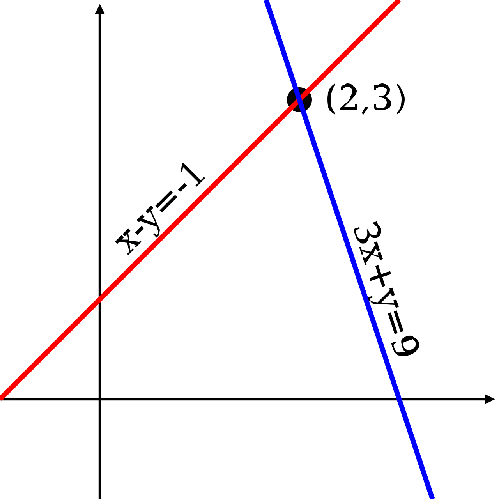
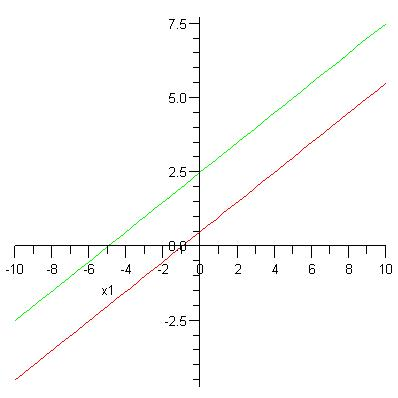
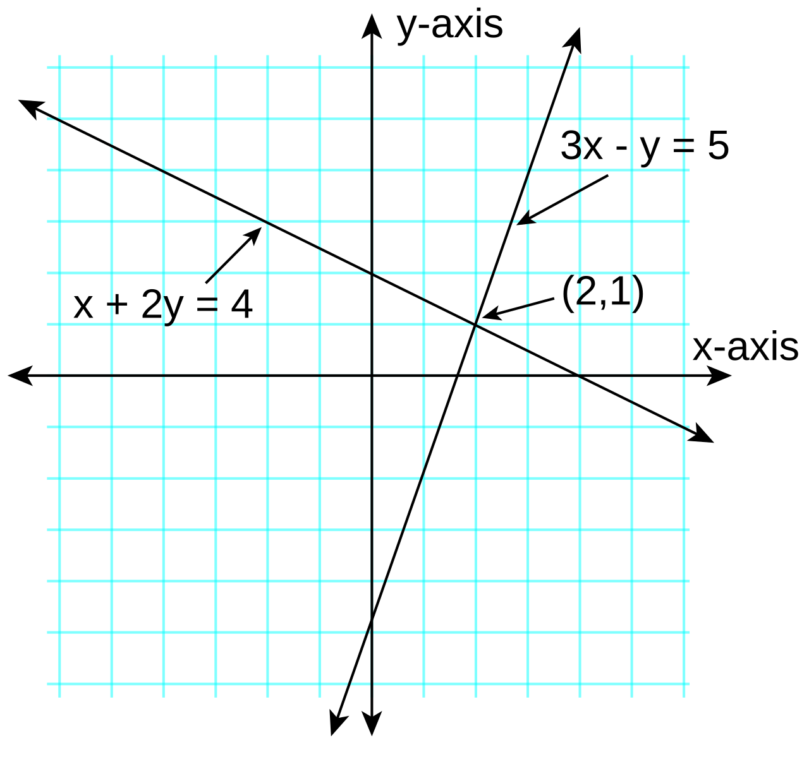
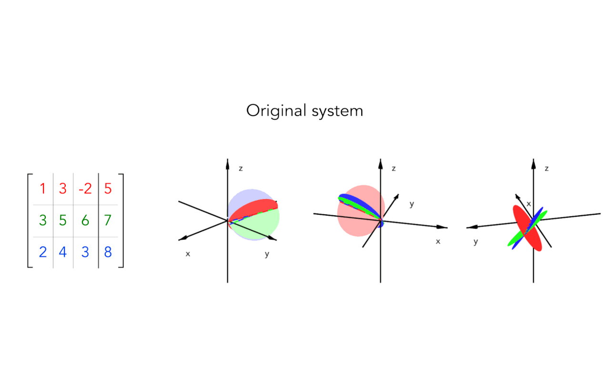
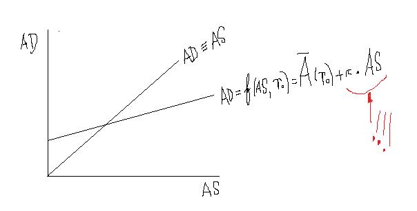

Systems of Equations & Inequalities
Up to now, almost every equation you have solved had one unknown hiding in it. Real questions are rarely that tidy: two prices, two speeds, two concentrations, two unknown quantities tangled together in the same story. A system of equations is simply two or more equations that have to be true at the same time, and solving one means finding the values that satisfy all of them at once. This chapter gives you four reliable ways to do that — graphing, substitution, elimination, and a systematic method for three unknowns — and then puts them to work on mixture problems, rate problems, and shaded regions on a graph. Every method here is arithmetic you already know, arranged in a careful order; go slowly, write every line down, and it will hold.
By the end of this chapter you can
- Explain what a solution of a system is and verify a proposed solution by substituting into every equation.
- Solve a two-variable system by graphing, and recognize intersecting, parallel, and coincident lines.
- Classify a system as consistent independent, inconsistent, or consistent dependent from its slopes and intercepts.
- Solve a system by substitution, and say when substitution is the fastest choice.
- Solve a system by elimination, including systems that first need to be multiplied through, and say when elimination is the fastest choice.
- Interpret the "no variables left" endings — a false statement (no solution) versus a true statement (infinitely many solutions).
- Solve a 3 × 3 system in three variables by reducing it to a 2 × 2 system and back-substituting.
- Set up and solve mixture and rate applications, and graph the solution region of a system of linear inequalities.
Section 1Solving by graphing

What a "solution" means when there are two equations
A system of equations is a set of equations that must all be true at the same moment. When we write
x + y = 6
y = 2x − 3
we are asking a single question: is there a pair of numbers (x, y) that makes both sentences true? A solution of a system in two variables is an ordered pair, not a single number. The pair (3, 3) is a solution only if it works in the first equation and in the second. Checking one and stopping is the single most common way students lose points on this topic, so build the habit now: always check in every original equation.
Here is the geometric idea that makes graphing work. The graph of a linear equation is the picture of all the pairs that satisfy it. So the graph of equation one shows every pair that works in equation one; the graph of equation two shows every pair that works in equation two. A pair that works in both must lie on both graphs — it must be a point where the two lines intersect. That is the whole method.
A fully worked example
Solve by graphing:
Equation 1: x + y = 6
Equation 2: 2x − y = 3
Step 1 — put each line in slope-intercept form, y = mx + b, because that form is the easiest to graph.
Equation 1: x + y = 6. Subtract x from both sides: y = −x + 6. Slope m = −1, y-intercept b = 6.
Equation 2: 2x − y = 3. Subtract 2x from both sides: −y = −2x + 3. Multiply both sides by −1: y = 2x − 3. Slope m = 2, y-intercept b = −3.
Step 2 — build a small table of points for each line. Pick easy x-values and do the arithmetic out loud.
| x | y = −x + 6 | Point on line 1 | y = 2x − 3 | Point on line 2 |
|---|---|---|---|---|
| 0 | −(0) + 6 = 6 | (0, 6) | 2(0) − 3 = −3 | (0, −3) |
| 2 | −(2) + 6 = 4 | (2, 4) | 2(2) − 3 = 1 | (2, 1) |
| 3 | −(3) + 6 = 3 | (3, 3) | 2(3) − 3 = 3 | (3, 3) |
| 6 | −(6) + 6 = 0 | (6, 0) | 2(6) − 3 = 9 | (6, 9) |
Step 3 — read the intersection. The point (3, 3) shows up on both lines, so that is where the graphs cross.
Step 4 — check in both original equations. Equation 1: 3 + 3 = 6, and 6 = 6 ✓. Equation 2: 2(3) − 3 = 6 − 3 = 3, and 3 = 3 ✓. Both are true, so the solution is (3, 3).
Graphing is honest but imprecise: if the true intersection were at (2.37, 1.14) you would never read it off graph paper. That is exactly why the algebraic methods in Sections 2 and 3 exist. Use graphing to understand what you are doing and to sanity-check an answer; use algebra to get the exact numbers.
Three pictures, three outcomes
Two lines in a plane can only relate to each other in three ways, so a two-equation linear system has only three possible outcomes. Learning to spot which one you have — before you do any work — saves a lot of time.
Case A: they cross once. Different slopes force the lines to meet at exactly one point. Example: y = −x + 6 and y = 2x − 3 have slopes −1 and 2. One solution. Such a system is called consistent (it has at least one solution) and independent (the equations say genuinely different things).
Case B: they are parallel. Consider y = 3x + 1 and y = 3x − 4. Both have slope 3, but their y-intercepts are 1 and −4, so they are different lines running side by side forever. They never meet, so no ordered pair satisfies both. The system is inconsistent; the solution set is empty. You can see the contradiction algebraically too: if y equals both, then 3x + 1 = 3x − 4, and subtracting 3x from both sides gives 1 = −4, which is false. No x can fix that.
Case C: they are the same line. Consider 2x + 4y = 8 and x + 2y = 4. Divide every term of the first by 2: (2x)/(2) + (4y)/(2) = (8)/(2), which is x + 2y = 4 — the second equation exactly. These are two disguises for one line, so they are coincident. Every point on that line satisfies both equations, and there are infinitely many solutions. Such a system is consistent and dependent. In slope-intercept form both become y = −(1)/(2)x + 2: same slope, same intercept.
| Picture | Slopes / intercepts | Number of solutions | Name |
|---|---|---|---|
| Lines cross once | Slopes differ | Exactly one ordered pair | Consistent, independent |
| Lines are parallel | Same slope, different y-intercept | None — empty solution set | Inconsistent |
| Lines lie on top of each other | Same slope, same y-intercept | Infinitely many (all points on the line) | Consistent, dependent |
- A solution of a system in two variables is an ordered pair that satisfies every equation — always check in both originals.
- Graphically, the solution is the point (or points) where the graphs intersect.
- Two lines give exactly three outcomes: one solution (different slopes), no solution (parallel), or infinitely many (coincident).
- Graphing builds understanding but reads poorly when the answer is not a whole number; use algebra for exact values.
Section 2Substitution

The idea: trade one variable for an equal expression
The trouble with a system is that each equation has two unknowns, and you know how to solve equations with only one unknown. The substitution method removes that trouble directly: solve one equation for one variable, then replace that variable in the other equation with the expression it equals. Because you are swapping in something genuinely equal, the new equation is still true — but now it has only one variable, and you are back on familiar ground.
The procedure is always the same four moves:
| Step | What you do | Why it works |
|---|---|---|
| 1 | Isolate one variable in one equation | Gives you an expression that variable is equal to |
| 2 | Substitute that expression into the other equation | Equals may replace equals; the result has one variable |
| 3 | Solve the one-variable equation | Ordinary algebra you already know |
| 4 | Back-substitute to find the other variable, then check both originals | A system needs a full ordered pair, and checking catches errors |
A warning on step 2: you must substitute into the other equation. If you substitute back into the same equation you came from, everything cancels and you get a true-but-useless statement like 6 = 6. That is not an error in the math; it just means you told the equation something it already knew.
Worked example 1 — a variable is already isolated
Solve: y = 3x − 4 and 2x + y = 11.
Step 1. The first equation is already solved for y: y = 3x − 4. Nothing to do.
Step 2. Substitute (3x − 4) in place of y in the second equation:
2x + y = 11 → 2x + (3x − 4) = 11
Step 3. Solve. Combine like terms: 2x + 3x = 5x, so the equation is 5x − 4 = 11. Add 4 to both sides: 5x = 15. Divide both sides by 5: x = 3.
Step 4. Back-substitute x = 3 into the isolated equation: y = 3(3) − 4 = 9 − 4 = 5.
Check both originals. First: y = 3x − 4 becomes 5 = 3(3) − 4 = 5 ✓. Second: 2x + y = 2(3) + 5 = 6 + 5 = 11 ✓. The solution is (3, 5).
Worked example 2 — when you have to isolate first
Solve: x − 2y = 1 and 3x + 4y = 23.
Step 1 — choose wisely. Look for a variable whose coefficient is 1 or −1, because isolating it will not create fractions. In the first equation x has coefficient 1. Add 2y to both sides of x − 2y = 1: x = 2y + 1.
Step 2 — substitute into the other equation. Replace x with (2y + 1):
3x + 4y = 23 → 3(2y + 1) + 4y = 23
Step 3 — solve. Distribute the 3: 3(2y) = 6y and 3(1) = 3, so we have 6y + 3 + 4y = 23. Combine like terms: 6y + 4y = 10y, giving 10y + 3 = 23. Subtract 3 from both sides: 10y = 20. Divide by 10: y = 2.
Step 4 — back-substitute. Using x = 2y + 1: x = 2(2) + 1 = 4 + 1 = 5.
Check both originals. First: x − 2y = 5 − 2(2) = 5 − 4 = 1 ✓. Second: 3x + 4y = 3(5) + 4(2) = 15 + 8 = 23 ✓. The solution is (5, 2).
When the variables all disappear
Sometimes every variable cancels partway through. Do not panic — the sentence you are left with is telling you which of the three pictures from Section 1 you are in.
All variables gone, statement false. Solve y = 2x + 1 and 4x − 2y = 5. Substitute: 4x − 2(2x + 1) = 5. Distribute the −2: −2(2x) = −4x and −2(1) = −2, so 4x − 4x − 2 = 5, which simplifies to −2 = 5. That is false for every value of x, so there is no solution — the lines are parallel.
All variables gone, statement true. Solve y = 2x + 1 and 6x − 3y = −3. Substitute: 6x − 3(2x + 1) = −3, so 6x − 6x − 3 = −3, which simplifies to −3 = −3. That is true for every value of x, so there are infinitely many solutions — the two equations describe the same line. We report the answer as "all ordered pairs satisfying y = 2x + 1."
Substitution is not only for lines
Substitution is the method that keeps working when an equation is not linear, which is why it is worth learning well. Solve y = x2 − 1 and y = x + 1. Since both expressions equal y, they equal each other:
x2 − 1 = x + 1
Subtract x and subtract 1 from both sides: x2 − x − 2 = 0. Factor: (x − 2)(x + 1) = 0. So x = 2 or x = −1. Back-substitute into y = x + 1: when x = 2, y = 3; when x = −1, y = 0. Check in the parabola: 22 − 1 = 3 ✓ and (−1)2 − 1 = 1 − 1 = 0 ✓. The line crosses the parabola twice, at (2, 3) and (−1, 0).
Two cautions come with nonlinear systems. First, a variable may carry a restriction, and you should write it down before you solve, not after. If an equation contains (1)/(x − 3), the denominator cannot be zero, so x ≠ 3 is an excluded value and a "solution" of x = 3 must be thrown out no matter how cleanly the algebra produced it. Here is that trap in miniature: solve y = (x)/(x − 2) and y = (2)/(x − 2). Both denominators force x ≠ 2. Setting the two expressions equal and multiplying both sides by (x − 2) gives x = 2 — the one value the system forbids. That candidate is extraneous, and the honest answer is no solution.
Second, if solving ever requires squaring both sides or multiplying through by an expression containing a variable, the new equation can pick up extraneous solutions that do not satisfy the original, because neither move is reversible. The same caution applies to any logarithmic equation you meet in a system: a logarithm is defined only for a positive argument, so log expressions carry a built-in domain restriction and every candidate must be tested against it. None of this is a reason to fear the method — it is a reason to check every candidate in the original equations, which you were going to do anyway.
- Substitution: isolate a variable, substitute into the other equation, solve, then back-substitute and check.
- It is easiest when a variable is already alone, or has a coefficient of 1 or −1.
- A false ending (like −2 = 5) means no solution; a true ending (like −3 = −3) means infinitely many.
- Substitution also handles nonlinear systems — state the excluded values before you solve, watch for extraneous solutions, and check every candidate in the originals.
Section 3Elimination

The idea: add the equations so a variable cancels
The elimination method — also called the addition method — rests on a fact that feels almost too easy: if A = B and C = D, then A + C = B + D. You may add two true equations together, left side to left side and right side to right side, and the result is still true. If the coefficients of one variable are opposites, that variable adds to zero and vanishes, leaving one equation in one unknown.
When the coefficients are not already opposites, you make them opposites. Multiplying an entire equation by a nonzero number does not change its solution set — 2x + 3y = 7 and 4x + 6y = 14 have exactly the same solutions — so you are free to scale either equation, or both, until the numbers line up.
Worked example 1 — the coefficients already cancel
Solve: 2x + 5y = 23 and 3x − 5y = −3.
Step 1 — look for opposites. The y-terms are +5y and −5y. Adding them gives 5y + (−5y) = 0y = 0. The y disappears with no extra work.
Step 2 — add the equations column by column.
| x-terms | y-terms | = | Constants | |
|---|---|---|---|---|
| Equation 1 | 2x | +5y | = | 23 |
| Equation 2 | 3x | −5y | = | −3 |
| Sum | 5x | 0 | = | 20 |
The arithmetic on the constants: 23 + (−3) = 20. On the x-terms: 2x + 3x = 5x. So the sum is 5x = 20.
Step 3 — solve. Divide both sides by 5: x = 4.
Step 4 — back-substitute. Put x = 4 into equation 1: 2(4) + 5y = 23, so 8 + 5y = 23. Subtract 8 from both sides: 5y = 15. Divide by 5: y = 3.
Check both originals. Equation 1: 2(4) + 5(3) = 8 + 15 = 23 ✓. Equation 2: 3(4) − 5(3) = 12 − 15 = −3 ✓. The solution is (4, 3).
Worked example 2 — multiply first, then eliminate
Solve: 3x + 4y = 10 and 2x + 5y = 9.
Step 1 — decide what to eliminate. Nothing cancels yet. Target x: the coefficients are 3 and 2, and the least common multiple of 3 and 2 is 6. If we can make them +6x and −6x, they will cancel.
Step 2 — multiply each equation through. Multiply every term of equation 1 by 2:
2(3x) + 2(4y) = 2(10) → 6x + 8y = 20
Multiply every term of equation 2 by −3:
−3(2x) + (−3)(5y) = −3(9) → −6x − 15y = −27
Step 3 — add. The x-terms: 6x + (−6x) = 0. The y-terms: 8y + (−15y) = −7y. The constants: 20 + (−27) = −7. So −7y = −7.
Step 4 — solve. Divide both sides by −7: y = 1.
Step 5 — back-substitute into an original equation. Use 3x + 4y = 10 with y = 1: 3x + 4(1) = 10, so 3x + 4 = 10. Subtract 4: 3x = 6. Divide by 3: x = 2.
Check both originals. Equation 1: 3(2) + 4(1) = 6 + 4 = 10 ✓. Equation 2: 2(2) + 5(1) = 4 + 5 = 9 ✓. The solution is (2, 1).
Notice that back-substitution used an original equation, not one of the multiplied versions. Either would work, but the originals are the ones you must satisfy, so using them doubles as part of your check.
The same two special endings
Elimination announces parallel and coincident lines the same way substitution does. Solve 2x + 3y = 7 and 4x + 6y = 5. Multiply the first equation by −2: −4x − 6y = −14. Add it to the second: (−4x + 4x) + (−6y + 6y) = −14 + 5, which is 0 = −9. False, so there is no solution.
Now try 2x + 3y = 7 and 4x + 6y = 14. Multiply the first by −2 again: −4x − 6y = −14. Add: 0 = −14 + 14 = 0. True, so there are infinitely many solutions — the second equation is just the first one doubled.
Which method should you reach for?
Both methods always work. The question is only which one costs less arithmetic, and the answer is usually visible in the coefficients.
| What the system looks like | Best method | Reason |
|---|---|---|
| A variable is already isolated, e.g. y = 2x − 4 | Substitution | Step 1 is already done for you |
| Some variable has coefficient 1 or −1 | Substitution | Isolating it creates no fractions |
| Both equations look like Ax + By = C with coefficients 2 or larger | Elimination | Substitution would force fractions immediately |
| A variable's coefficients are already opposites (+5y and −5y) | Elimination | One addition and the variable is gone |
| Three or more variables | Elimination | It scales; substitution gets tangled fast |
| An equation is not linear (contains x2, √x, and so on) | Substitution | Terms will not cancel by addition |
- Elimination adds the equations so that one variable's terms cancel to zero.
- Multiplying an entire equation by a nonzero number does not change its solutions — that is what lets you manufacture opposites.
- Use the least common multiple of the two coefficients to decide what to multiply by.
- Elimination is easiest for systems in Ax + By = C form, especially with no coefficient of 1; 0 = nonzero means no solution and 0 = 0 means infinitely many.
Section 4Systems in three variables

What changes and what does not
An equation like 2x − y + 3z = 9 is linear in three variables. Its solution is no longer an ordered pair but an ordered triple (x, y, z), and its graph is no longer a line but a flat plane floating in three-dimensional space. A system of three such equations asks: is there a point that lies on all three planes at once?
Three planes can meet at exactly one point (like the corner of a room where two walls and the floor come together) — that is the unique solution case. They can share a whole line or a whole plane, giving infinitely many solutions. Or they can have no common point at all — two of them parallel, or three of them arranged like the sides of a triangular prism — giving no solution.
The strategy is comforting because it reuses what you already know: knock the 3 × 3 system down to a 2 × 2 system, solve that, then climb back up. The tool for knocking it down is elimination.
A fully worked 3 × 3 example
Solve:
E1: x + y + z = 6
E2: 2x − y + 3z = 9
E3: x − y + z = 2
Step 1 — choose a variable to eliminate everywhere. Scan the y-column: +1y, −1y, −1y. Those are already opposites, so y is the cheapest target. We will eliminate y twice, using two different pairs of equations.
Step 2 — eliminate y from E1 and E2 by adding them.
(x + 2x) + (y − y) + (z + 3z) = 6 + 9
The x-terms give 3x; the y-terms give 0; the z-terms give 4z; the constants give 15. Call the result Equation A: 3x + 4z = 15.
Step 3 — eliminate y from E1 and E3 by adding them.
(x + x) + (y − y) + (z + z) = 6 + 2
That gives 2x + 2z = 8. Divide every term by 2 to keep the numbers small: Equation B: x + z = 4.
Equations A and B form an ordinary 2 × 2 system in x and z — the hard part is over.
Step 4 — solve the 2 × 2 system. Equation B has a coefficient of 1, so substitution is cheap. From B: x = 4 − z. Substitute into A:
3(4 − z) + 4z = 15
Distribute the 3: 3(4) = 12 and 3(−z) = −3z, so 12 − 3z + 4z = 15. Combine the z-terms: −3z + 4z = 1z, giving 12 + z = 15. Subtract 12 from both sides: z = 3.
Step 5 — back-substitute for the second variable. Using x = 4 − z: x = 4 − 3 = 1.
Step 6 — back-substitute into an original three-variable equation for the last one. Use E1: x + y + z = 6 becomes 1 + y + 3 = 6, so 4 + y = 6. Subtract 4: y = 2.
Step 7 — check in all three originals. This is not optional in a 3 × 3, because a single arithmetic slip in step 2 quietly poisons everything after it.
| Equation | Substitute x = 1, y = 2, z = 3 | Arithmetic | True? |
|---|---|---|---|
| E1 | 1 + 2 + 3 | = 6, and we need 6 | ✓ |
| E2 | 2(1) − 2 + 3(3) | = 2 − 2 + 9 = 9, and we need 9 | ✓ |
| E3 | 1 − 2 + 3 | = 2, and we need 2 | ✓ |
All three hold, so the solution is the ordered triple (1, 2, 3).
Bookkeeping rules that keep you out of trouble
Three-variable systems are not conceptually harder than two-variable ones; they are just longer, and length is where errors live. A few habits carry most of the weight.
Eliminate the same variable both times. If you cancel y from the pair (E1, E2) and then cancel z from the pair (E1, E3), your two new equations will not share a common pair of variables and you will have gained nothing.
Use each equation at least once. A classic trap is to use E1 with E2, then E1 with E2 again in a different disguise. You must bring E3 into the work, or its information never enters the answer.
Aim for triangular form if you like structure. Some people prefer to rearrange the system into a staircase — the first equation with all three variables, the second with two, the third with one — and then solve from the bottom up. That process is called back-substitution, and it is exactly what steps 4 through 6 above did, just written differently.
Read the endings the same way as before. If eliminating produces a false statement such as 0 = 7, the system is inconsistent and has no solution. If it produces 0 = 0, the equations are dependent and there are infinitely many solutions — the planes share a line or a plane rather than a point.
- A solution in three variables is an ordered triple (x, y, z); each equation graphs as a plane.
- Strategy: eliminate the same variable from two different pairs of equations to get a 2 × 2 system, solve it, then back-substitute.
- Every equation must be used at least once, or its information is lost.
- 0 = nonzero still means no solution; 0 = 0 still means infinitely many; check the triple in all three originals.
Section 5Applications and systems of inequalities

Turning a story into two equations
Word problems become manageable the moment you accept a rigid routine. Name the unknowns with letters and units. Write one equation for each independent fact in the story. Two unknowns need two facts; three unknowns need three. Then solve by whichever method the coefficients invite, and — the step people skip — ask whether the answer makes sense in the story. A negative number of liters or a fractional number of chairs is a signal to go back and reread, not a final answer.
Two families of problems show up constantly, so it is worth seeing each worked completely.
Worked example 1 — a mixture problem
A technician has a 20% saline solution and a 50% saline solution. How many milliliters of each are needed to make 300 mL of a 30% solution?
Step 1 — name the unknowns. Let x = milliliters of the 20% solution and y = milliliters of the 50% solution. Both must be at or above zero: x ≥ 0 and y ≥ 0.
Step 2 — write one equation for total volume. The two amounts have to add up to 300 mL:
x + y = 300
Step 3 — write one equation for the amount of salt. This is the equation people forget. Track the substance, not the liquid. The 20% bottle contributes 0.20x mL of salt, the 50% bottle contributes 0.50y mL, and the finished 300 mL at 30% contains 0.30(300) = 90 mL of salt.
0.20x + 0.50y = 90
Step 4 — clear the decimals. Multiply every term of the salt equation by 10: 10(0.20x) = 2x, 10(0.50y) = 5y, and 10(90) = 900. So 2x + 5y = 900.
Step 5 — solve. The volume equation has coefficients of 1, so substitution is cheap. From x + y = 300 we get x = 300 − y. Substitute into 2x + 5y = 900:
2(300 − y) + 5y = 900
Distribute: 2(300) = 600 and 2(−y) = −2y, giving 600 − 2y + 5y = 900. Combine the y-terms: −2y + 5y = 3y, so 600 + 3y = 900. Subtract 600 from both sides: 3y = 300. Divide by 3: y = 100.
Step 6 — back-substitute. x = 300 − 100 = 200.
Step 7 — check against the story, not just the algebra. Volume: 200 + 100 = 300 mL ✓. Salt: 0.20(200) + 0.50(100) = 40 + 50 = 90 mL ✓. Concentration of the result: (90)/(300) = 0.30 = 30% ✓. Both amounts are positive, so they are physically possible. Answer: 200 mL of the 20% solution and 100 mL of the 50% solution.
Sanity check on the reasoning: 30% sits closer to 20% than to 50%, so we should need more of the weak solution than the strong one — and we do, 200 mL versus 100 mL. That kind of glance catches sign errors before they reach your paper.
Worked example 2 — a rate problem
A boat travels 36 miles downstream in 2 hours, then returns the same 36 miles upstream in 3 hours. Find the boat's speed in still water and the speed of the current.
Step 1 — name the unknowns. Let b = the boat's speed in still water (mph) and c = the current's speed (mph).
Step 2 — model the two directions. Going downstream the current helps, so the effective speed is b + c. Going upstream the current fights the boat, so the effective speed is b − c.
Step 3 — use distance = rate × time, rearranged as rate = distance ÷ time.
Downstream: b + c = (36)/(2) = 18
Upstream: b − c = (36)/(3) = 12
Step 4 — eliminate. The c-terms are +c and −c, already opposites. Add the two equations: (b + b) + (c − c) = 18 + 12, which is 2b = 30. Divide both sides by 2: b = 15.
Step 5 — back-substitute. Put b = 15 into b + c = 18: 15 + c = 18, so c = 3.
Step 6 — check against the story. Downstream speed 15 + 3 = 18 mph for 2 hours covers 18 × 2 = 36 miles ✓. Upstream speed 15 − 3 = 12 mph for 3 hours covers 12 × 3 = 36 miles ✓. Both speeds are positive, and the current is slower than the boat — otherwise the boat could not go upstream at all. Answer: the boat travels 15 mph in still water and the current runs at 3 mph.
| Problem type | Equation 1 (the "how much" fact) | Equation 2 (the "how strong" fact) |
|---|---|---|
| Mixture / solution | Amounts add to the total: x + y = total | Substance adds up: p1x + p2y = pmix(total) |
| Coins / tickets | Counts add to the total number | Values add to the total money |
| Wind or current | With the flow: r + w = distance ÷ time | Against the flow: r − w = distance ÷ time |
| Break-even | Cost: C = (fixed) + (per-unit)x | Revenue: R = (price)x; solve C = R |
Systems of inequalities: shading instead of pinpointing
Change an equals sign to an inequality sign and the answer stops being a point and becomes a region. The graph of y ≤ −x + 6 is not a line; it is the line together with every point below it. Graphing a linear inequality takes three moves.
Move 1 — graph the boundary line by pretending the inequality sign is an equals sign. Draw it solid if the symbol is ≤ or ≥, because those points are included. Draw it dashed if the symbol is < or >, because those points are excluded.
Move 2 — pick a test point that is not on the line. Use (0, 0) whenever the line misses the origin, because the arithmetic is trivial. If the line passes through the origin, use something like (1, 0) or (0, 1) instead.
Move 3 — shade. If the test point makes the inequality true, shade the side containing it. If it makes the inequality false, shade the other side.
One algebra warning first. If you have to solve for y and that requires multiplying or dividing both sides by a negative number, the inequality symbol flips. Adding or subtracting never flips it; only multiplying or dividing by a negative does. Take 2x − 3y ≥ 6. Subtract 2x: −3y ≥ −2x + 6. Now divide every term by −3, and because −3 is negative, ≥ becomes ≤: y ≤ (2)/(3)x − 2. Multiplying works the same way: from −(1)/(2)y < 4, multiply both sides by −2 and < flips to >, giving y > −8. Forgetting that flip shades exactly the wrong half of the plane.
Worked example 3 — graphing a system of two inequalities
Graph the solution region of: y ≤ −x + 6 and y ≥ 2x − 3.
Step 1 — handle the first inequality. Boundary: y = −x + 6, the same line from Section 1, passing through (0, 6) and (6, 0). The symbol is ≤, so the line is solid. Test (0, 0): is 0 ≤ −(0) + 6? That asks whether 0 ≤ 6, which is true, so shade the side containing the origin — the region below the line.
Step 2 — handle the second inequality. Boundary: y = 2x − 3, passing through (0, −3) and (2, 1). The symbol is ≥, so this line is also solid. Test (0, 0): is 0 ≥ 2(0) − 3? That asks whether 0 ≥ −3, which is true, so shade the side containing the origin — the region above this line.
Step 3 — find the overlap. The solution of the system is only where both shadings agree. The two boundary lines cross at (3, 3) — we computed that in Section 1 — so the solution region is a wedge with its point at (3, 3), opening to the left, bounded above by y = −x + 6 and below by y = 2x − 3. Both edges belong to the region because both lines are solid.
Step 4 — verify with sample points. Try (0, 0): 0 ≤ 6 ✓ and 0 ≥ −3 ✓, so the origin is in the region, as the shading says. Try (5, 5): is 5 ≤ −5 + 6 = 1? No — 5 ≤ 1 is false, so (5, 5) is outside, which matches the picture. Try (3, 3), the corner: 3 ≤ −3 + 6 = 3 ✓ (equality is allowed) and 3 ≥ 2(3) − 3 = 3 ✓. The corner point is included.
A system of inequalities can also have no solution. Graph y > x + 2 and y < x − 1. Both boundaries have slope 1, so they are parallel, and the first inequality wants points above the higher line while the second wants points below the lower line. Those two regions never overlap, so the solution set is empty. You can see it algebraically as well: the two conditions together would require x + 2 < y < x − 1, and no number is both greater than x + 2 and less than x − 1.
| Symbol | Boundary line | Points on the line | Shade |
|---|---|---|---|
| < | Dashed | Not included | Side where the test point is true |
| > | Dashed | Not included | Side where the test point is true |
| ≤ | Solid | Included | Side where the test point is true |
| ≥ | Solid | Included | Side where the test point is true |
- Give each unknown a letter and a unit, then write one equation per independent fact.
- Mixture problems need a total-amount equation and a substance equation; rate problems with wind or current use r + w and r − w.
- Graphing an inequality: solid line for ≤ and ≥, dashed for < and >; then test a point and shade the side that makes it true.
- Multiplying or dividing an inequality by a negative number flips the symbol; adding or subtracting never does.
- The solution of a system of inequalities is the overlap of the shaded regions — and the overlap can be empty.
The chapter in one breath
- A system is several equations that must be true at once; its solution is an ordered pair (or triple) that satisfies every one of them, so always check in all the originals.
- Graphing shows the solution as the point where the lines intersect, and it reveals the only three possible outcomes: one solution, none (parallel), or infinitely many (coincident).
- Substitution isolates a variable and swaps it into the other equation; it is best when a variable is already alone or has a coefficient of 1 or −1, and it is the method that survives nonlinear equations.
- Elimination adds the equations so a variable cancels, multiplying an entire equation first when needed; it is best for Ax + By = C systems and for three or more variables.
- Both algebraic methods end the same way in special cases: a false statement (0 = 7) means no solution, a true statement (0 = 0) means infinitely many.
- A 3 × 3 system is solved by eliminating the same variable from two different pairs to make a 2 × 2 system, then back-substituting — using every equation at least once.
- Mixture problems pair a total-amount equation with a substance equation; rate problems with a current pair r + w with r − w; always test the answer against the story.
- A system of inequalities is solved by shading: solid or dashed boundary, a test point to choose the side, and the answer is the overlap — remembering that multiplying or dividing by a negative flips the symbol.
ReferenceWords worth knowing
A quick reference for the vocabulary in this chapter — skim it now, and come back whenever a word slows you down mid-problem.
- Back-substitution
- Taking a value you have just found and putting it back into an earlier equation to find the remaining variable(s); the climb back up after reducing a system.
- Boundary line
- The line you get by replacing an inequality's symbol with an equals sign; drawn solid for ≤ or ≥ and dashed for < or >.
- Break-even point
- The solution of the system cost = revenue; the production level at which money in equals money out.
- Coincident lines
- Two equations that graph as the same line; they have identical slope and identical y-intercept and produce infinitely many solutions.
- Consistent system
- A system that has at least one solution.
- Dependent system
- A consistent system whose equations carry the same information (one is a multiple of the other), giving infinitely many solutions.
- Elimination method
- Solving a system by adding the equations — after multiplying one or both if necessary — so that one variable's terms cancel to zero. Also called the addition method.
- Excluded value
- A number the variable is not allowed to take because it would make a denominator zero (or break another domain rule, such as a logarithm needing a positive argument); it must be stated before solving and any candidate equal to it must be rejected.
- Extraneous solution
- A value produced by a legitimate algebraic step — squaring both sides, or multiplying through by an expression containing a variable — that does not actually satisfy the original equation; the reason every candidate is checked in the originals.
- Half-plane
- One of the two regions a line cuts the coordinate plane into; the solution set of a linear inequality is a half-plane, with or without its boundary.
- Inconsistent system
- A system with no solution at all; in two variables, parallel lines. Algebraically it announces itself as a false statement such as 0 = −9.
- Independent system
- A system whose equations give genuinely different information; in two variables, lines with different slopes and exactly one solution.
- Linear equation in two variables
- An equation that can be written Ax + By = C with A and B not both zero; its graph is a straight line.
- Ordered pair
- A solution written (x, y) with the order fixed; (3, 5) and (5, 3) are different points.
- Ordered triple
- A solution in three variables written (x, y, z); it must satisfy all three equations.
- Parallel lines
- Distinct lines with the same slope and different y-intercepts; they never intersect, so the system is inconsistent.
- Slope-intercept form
- The form y = mx + b, where m is the slope and b the y-intercept; the most convenient form for graphing and for comparing two lines.
- Solution of a system
- Any set of values that makes every equation in the system true simultaneously.
- Substitution method
- Solving a system by isolating one variable and replacing it in the other equation with the expression it equals.
- System of equations
- Two or more equations considered together, whose solutions must satisfy all of them at once.
- System of inequalities
- Two or more inequalities considered together; the solution is the overlap of their shaded regions, and may be empty.
- Test point
- Any point not on the boundary line, substituted into an inequality to decide which side to shade; (0, 0) is the usual choice when the line misses the origin.
- Triangular form
- A rearrangement of a system in which each successive equation has one fewer variable, so it can be solved from the bottom up by back-substitution.